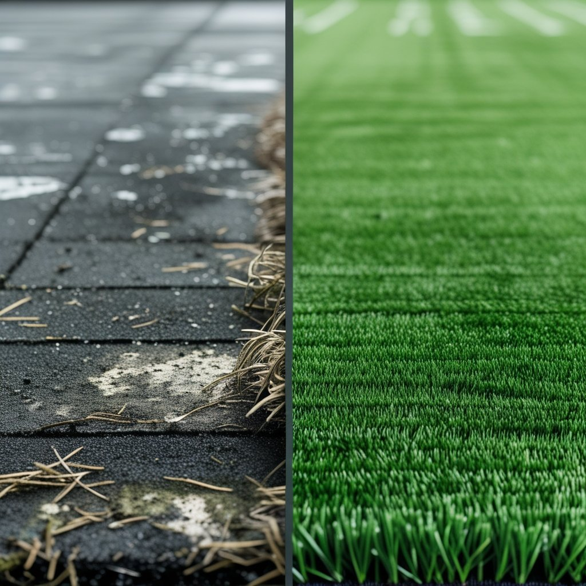

Say Goodbye to Stubborn Pet Odors Forever
Professional turf cleaning that actually eliminates pet odors at the source. Eco-friendly, pet-safe solutions that keep your artificial turf fresh, clean, and odor-free all year round.
Get Your Free Quote
Fill out the form and we will get back to you within 2 hours.

Pet Odors Don't Go Away on Their Own
Urine soaks into the infill and backing of your artificial turf. Rain and hosing just push it deeper. Over time, bacteria multiply and the smell gets worse, especially in warm weather.
- We extract urine buildup from fibers and infill
- Enzymatic treatment destroys odor-causing bacteria
- Fresh infill restores drainage and cooling
- Results you can see and smell immediately
Three Levels of Turf Care
Choose the level of cleaning your turf needs. Each tier builds on the one before it.
Refresh Clean
Essential maintenance to keep your turf looking its best between deeper cleanings.
- Detailed Inspection
- Debris Removal
- Surface Brushing
- Decompacting
- Grooming
- Weeds Removal
Restore Clean
Complete pet-focused cleaning that eliminates odors and refreshes your turf.
Everything in Refresh, plus:
- Pet Waste Removal
- Vacuuming
- Deodorizing
- Odor Removal
- Infill Top-Up
- Re-Fluff
Deep Clean
Full restoration that brings your turf back to like-new condition.
Everything in Restore, plus:
- Stain Removal
- Power Washing
- Urine Extraction
- Infill Replenishment
- Drainage Improvement
- Re-Infill
- Small Repairs
Get a SparklyTurf Plan and Save More!
Investing in a regular turf maintenance plan can save you time and money in the long run. With our affordable plans, you can ensure your artificial grass stays clean and pristine all year round.
Monthly
Cleaning Service
$279 Per Service
up to 400 sqft
Bi Monthly
Cleaning Service
$319 Per Service
up to 400 sqft
Quarterly
Cleaning Service
$359 Per Service
up to 400 sqft
Real Results From Real Homeowners
See why pet owners trust SparklyTurf to keep their artificial turf fresh and odor-free.
Fresh Turf in 3 Simple Steps
Getting your turf professionally cleaned has never been easier.
Request a Quote
Tell us about your turf size, condition, and any specific concerns. We will get back to you with a customized quote.
Schedule Your Cleaning
Pick a time that works for you. We offer flexible scheduling to fit your busy life.
Enjoy Fresh Turf
Our team deep cleans your turf using eco-friendly methods. You will notice the difference the moment we finish.
100% Satisfaction Guaranteed
We stand behind every job. If you are not completely satisfied with our cleaning, we will come back and re-clean your turf at no additional cost. That is our promise to you.
Get Your Free QuoteSee the Difference Professional Cleaning Makes
Our customers consistently report dramatic improvements in their turf's appearance, smell, and overall condition after just one cleaning session.
Common Questions
Everything you need to know about our turf cleaning services.
Ready for Fresh, Odor-Free Turf?
Get a free, no-obligation quote today. We will customize a cleaning plan that fits your needs and budget.
Or text us anytime at (702) 763-7363